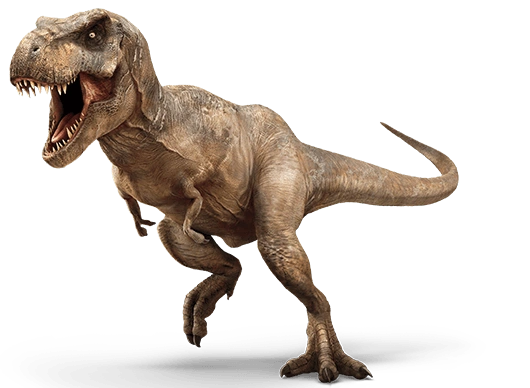
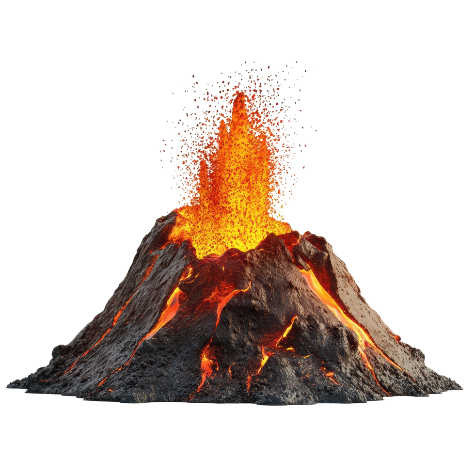
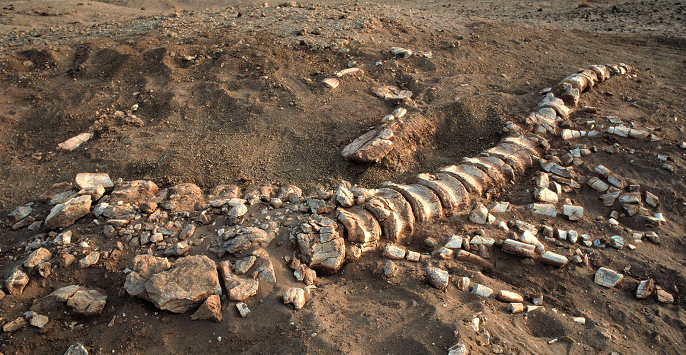
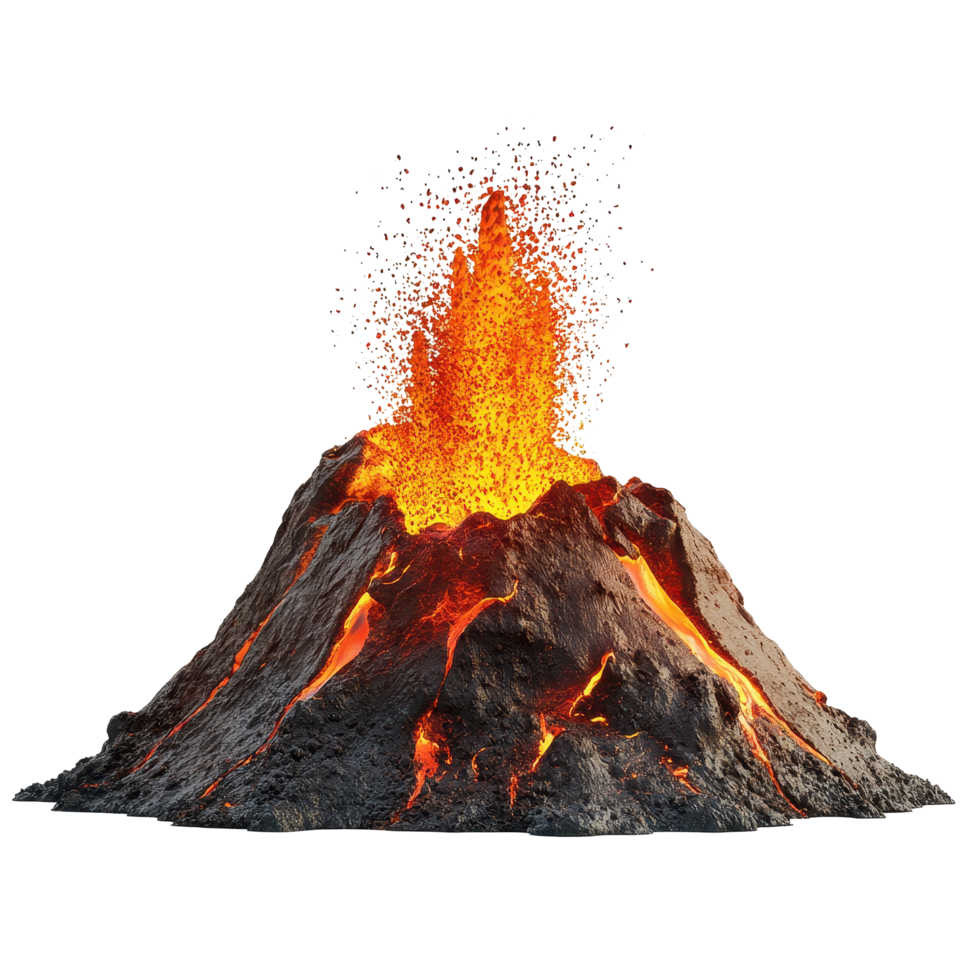
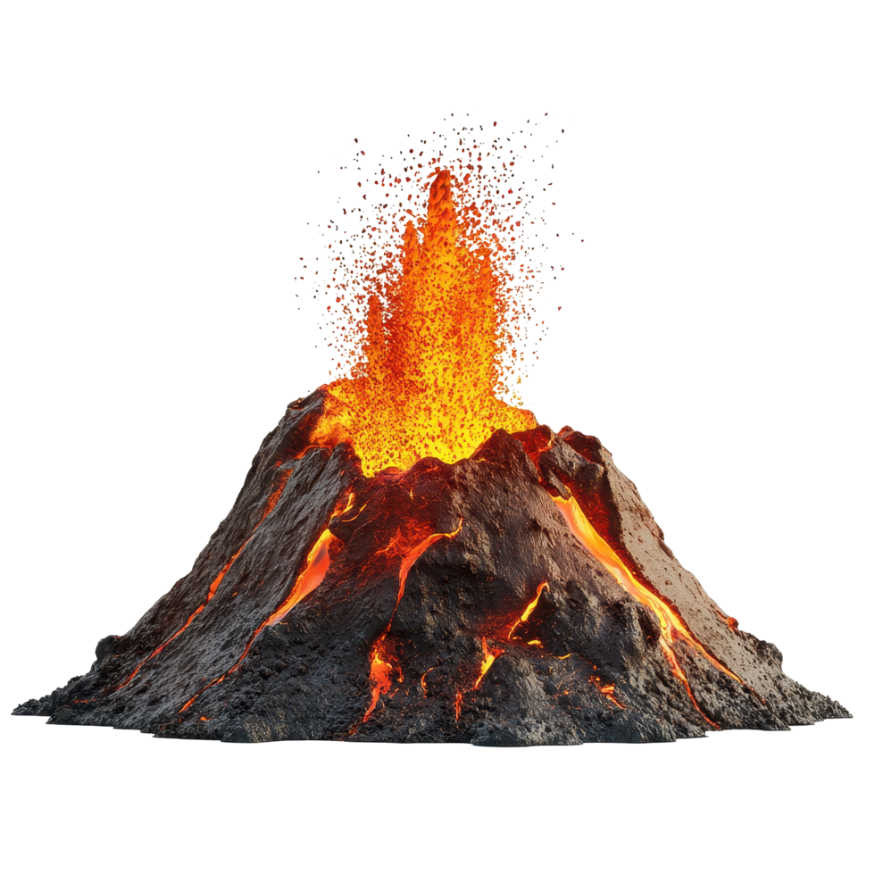

For millions of years, dinosaurs dominated our planet. Their fossils now
serve as clues that help scientists understand how they lived and how
they died. This exhibit explores the final days of these majestic
creatures through their fossil records.
Types of Dinosaur in This Exhibit
These are the major groups of dinosaurs represented in this exhibit.
Their forms, diets, and evolutionary traits shaped prehistoric
ecosystems.
Small Theropods
Small, agile, feathered dinosaurs closely related to early birds.
Many were swift omnivores or opportunistic hunters that filled
diverse ecological niches.

Large Theropods
Apex predators such as Tyrannosaurs. Massive jaws, powerful legs,
and strong ecological influence.
Sauropods
Long-necked, gigantic herbivores. They shaped vegetation patterns
and dominated many landscapes.
Ornithopods
Fast-moving herbivores with strong hind legs and specialized chewing
systems. Many lived in herds and were vital to maintaining plant
diversity.
Ceratopsians
Horned dinosaurs known for their iconic frills and face horns. They
were resilient grazers and played a central role in Late Cretaceous
ecosystems.
Armored Dinosaurs
Heavily built herbivores protected by bony plates, tail clubs, and
spikes. Their natural defenses made them formidable against large
predators.
What Caused Their Extinction?
The Chicxulub asteroid is the most famous cause, the full extinction
story involves volcanic eruptions, climate change, ecosystem collapse,
and shifting environments. These factors together led to the end of the
dinosaur era.

Where Fossils Were Found
Each fossil reveals information about not only the creature but also the
environment it lived in. From Sichuan, China to India, dinosaur remains
were discovered in various parts of the world and they tell the story of
ancient ecosystems.
Interactive Fossil Visualization
Explore dinosaur size, diet, fossil location, and their final moments
through a custom interactive data visualization.
Fossils allow us to reconstruct ecosystems, understand the extinction
patterns, follow the biological evolution, and discover life after
catastrophic events.

Exhibit Summary
This exhibit weaves together fossil locations, size dimensions, diet,
and geologic timescales to reveal a story of dinosaur life and their
final moments on Earth. Through an interactive visualization, visitors
can explore how different species lived, where they roamed, and how
global events—from asteroid impact to environmental collapse—shaped
their extinction. By combining scientific data with interactive visual
storytelling, the exhibit transforms millions of years of prehistory
into an engaging, data-driven journey through the last days of the
dinosaurs.
Interactions:
Visitors can filter by dinosaur type and hover over glyphs to reveal
details in the information panel.
Custom Visualization Category: Combinatorial
This visualization is combinatorial because it combines a
geographic map, custom glyphs, color/type encoding, diet-shape encoding,
and interactive filtering into one integrated graphic that is not a
standard D3 chart.


 
